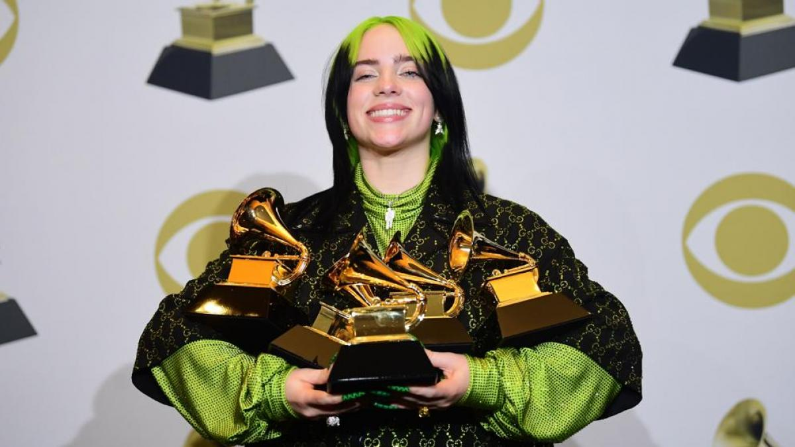
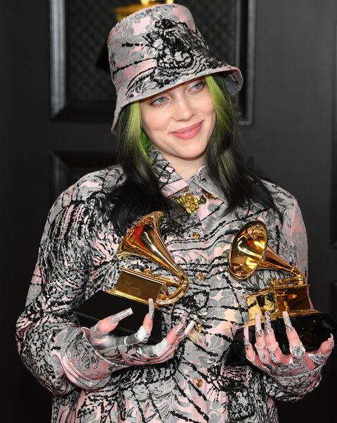

Billie Eilish
Grammys 2020

Billie Eilish fue Nominada a 6 categorias en Los grammy:
Gracias a su album que se lanzo en el 2019 "When We All Fall Asleep, Where Do We Go?" el cual Gano 5 de las nominaciones mas importantes de la noche, siendo la interprete mas joven en ganar el premio del album del año, tambien se convirtio en la primera mujer y la segunda persona en ganar los premios de Grabacion del año, album del año, cancion del año, y mejor artista nuevo en el mismo año (el primero en hacerlo fue Christopher Cross en 1981).
Grammys 2021

La Artista Fue nominada nuevamente en el años 2021 Esta vez en 4 categorias
Llevandose a su casa solo dos de ellos y completando 7 premios Grammy en su carrrera con tan solo 19 años de edad, y futurizando los que pronte se le agregaran de seguro ya que la Artista para el 2022 fue nominada nuevamente a 7 categorias gracias a su nuevo album "Happier Than Ever".